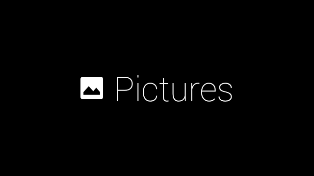

This is a GDK application.
In order to install this onto your Google Glass you need to sideload it. In order to do that you need to install adb onto your computer. The following video will show you how to install it onto a windows computer since the drive is broken. If you own a Mac you don't need to mess with the driver it will just work.
Installing Drivers
Sideloading APKs
Starting up Gallery for Glass
Once you have successfully installed Gallery for Glass you can start it with the voice command "okay, glass" and then "pictures" or you can find the following card in the glass menu.
Available Picture Options
You can now see all of the images available on your device. Each image has 3 options (at the moment) Make Vignette, Upload, and Delete. Make Vignette does exactly what it says, you are asked to select a second image and it will generate a Vignette and save it for you. When you select upload, the image is uploaded to a server. You then open up the companion application on your android device and download the images. After they have been downloaded they will be removed from the server. Finally, you have delete which removes the image from you Google Glass Device.